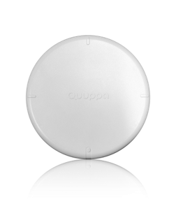
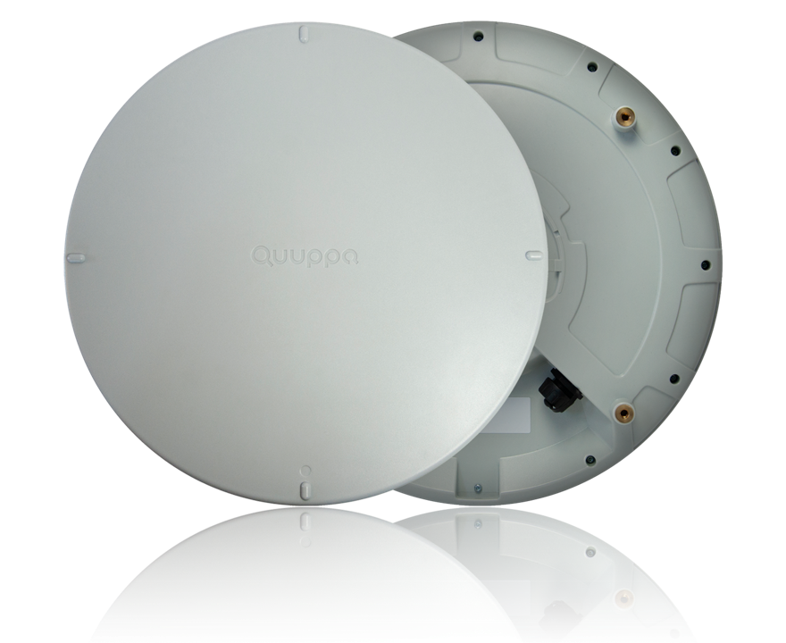

Quuppa Network Components
This section describes the different network components provided by Quuppa that are used to set up Quuppa systems.
Quuppa Positioning Engine
The Quuppa Positioning Engine (QPE) is a Java software web application that gathers and processes data from the Locators and then passes it on to third party applications via the Quuppa APIs for the purpose of processing location data.
The QPE can be deployed on enterprise-level hardware, either with a static or a dynamic IP address (static is recommended for most use cases) and connects to the Locators over IP networks.
Internet connectivity is needed to run the QPE, so that it can contact the Quuppa Customer Portal (QCP) for license verification, project syncing and Active Remote Monitoring.
Quuppa Hardware
The Quuppa Locators, Q17 and Q35, are devices that can communicate with both proprietary and Bluetooth® enabled devices for the purpose of determining the device's location within a defined area. They are a key component for the Quuppa network infrastructure.
Q17 Locator

Key features of the Q17 Locator from a networking perspective:
| Power Supply | 48 V Power over Ethernet (PoE) or micro-USB 5V |
| Power Consumption | Max. 1W |
| Data Connectivity | Ethernet |
| Ethernet Connector | RJ-45 |
| PoE and Cable Types | Standard IEEE 802.3at Type 1 PoE, power class 1 (Low power
device). Support for both shielded or unshielded cables, Cat 5e or above. |
| Ethernet Connectivity | 100Mbit/s Full duplex |
| Dynamic IP address | Obtains IP address via a DHCP server (Locator runs a DHCP
client). The Generation Q Quuppa Locators support DHCP options. For more information about DHCP options, please see the Typical System Architectures section of this guide. |
| Connection to QPE | Over IP networks, using UDP port 22100. |
| Ethernet MAC | The Locator's ID is the Ethernet MAC address for the device.
You can recognise a Generation Q Locator by its MAC address as it is configured via Quuppa's own address space and will be in the range of A4-DA-22 E00000-EFFFFF (e.g. a4da22efebdc). This enables MAC filtering if needed. |
For more information about the Q17, please see the product specification and the Q17 Product Page on our website.
Q35 Locator

Key features of the Q35 Locator from a networking perspective:
| Power Supply | 48 V Power over Ethernet (PoE) or micro-USB 5V |
| Power Consumption | Max. 1W |
| Data Connectivity | Ethernet |
| Ethernet Connector | RJ-45 |
| PoE and Cable Types | Standard IEEE 802.3at Type 1 PoE, power class 1 (Low power
device). Support for both shielded or unshielded cables, Cat 5e or above. |
| Ethernet Connectivity | 100Mbit/s Full duplex |
| Dynamic IP address | Obtains IP address via a DHCP server (Locator runs a DHCP
client). The Generation Q Quuppa Locators support DHCP options. For more information about DHCP options, please see the Typical System Architectures section of this guide. |
| Connection to QPE | Over IP networks, using UDP port 22100. |
| Ethernet MAC | The Locator's ID is the Ethernet MAC address for the device.
You can recognise a Generation Q Locator by its MAC address as it is configured via Quuppa's own address space and will be in the range of A4-DA-22 E00000-EFFFFF (e.g. a4da22efebdc). This enables MAC filtering if needed. |
For more information about the Q35, please see the product specification and the Q35 Product Page on our website.
Quuppa Customer Portal
The Quuppa Customer Portal (QCP) is a cloud service maintained for the purposes of storing a customer's account information, license keys and project data. The QPE communicates with the QCP at scheduled intervals to verify the validity of the license keys used in a project.